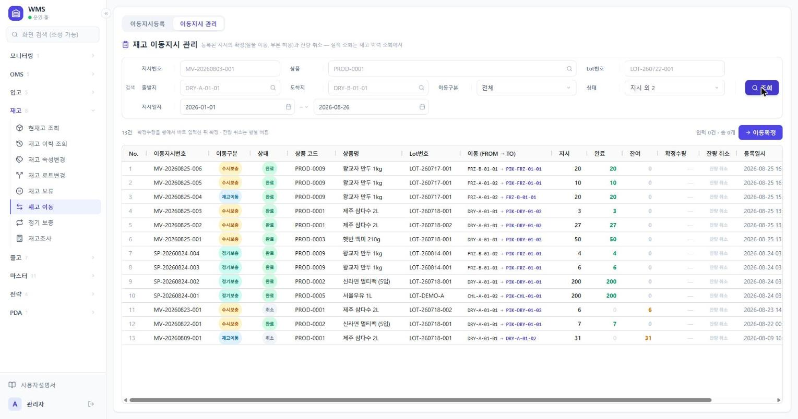
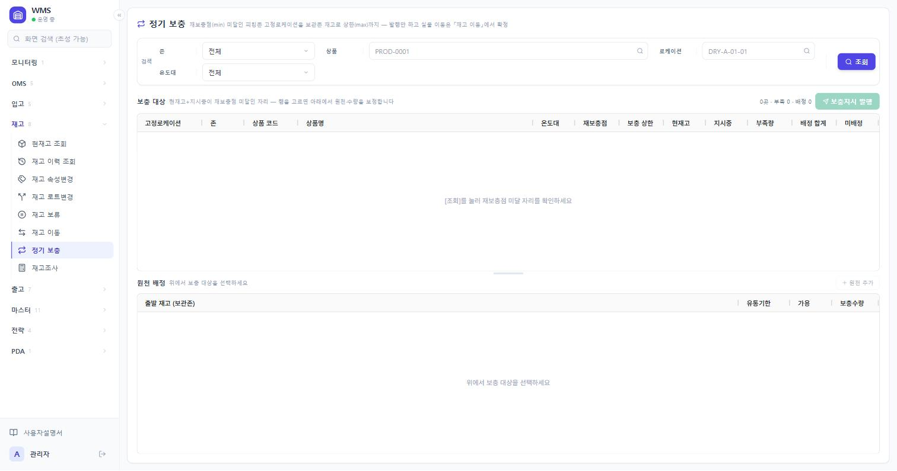
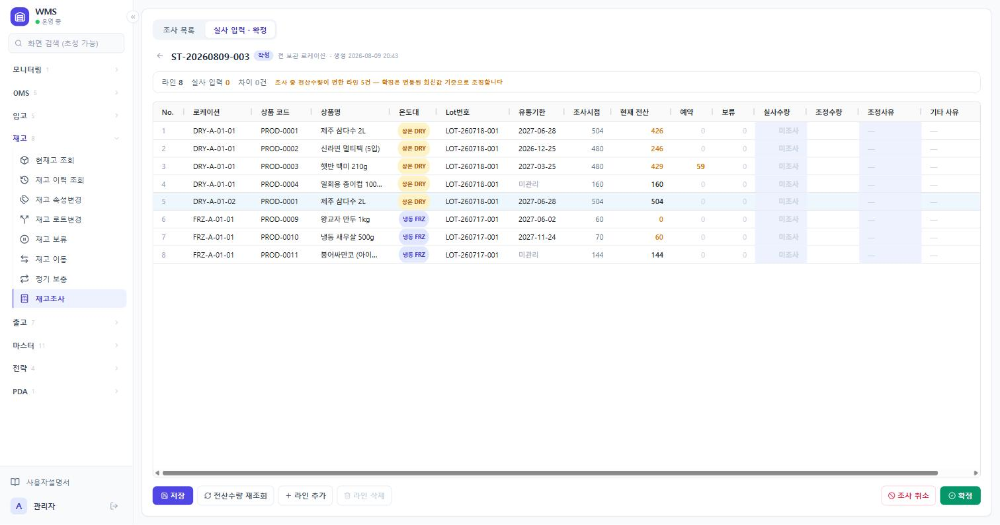

← 목차
WareFlow 사용자설명서
4. 재고
4.0 이 장의 짜임새
재고 메뉴는 입고·출고처럼 순서대로 진행하는 것이 아닙니다. 하려는 일에 따라 쓰는 화면이 다릅니다. 아래 표에서 지금 할 일을 찾아 그 절로 가면 됩니다.
| 하려는 일 | 쓰는 화면 |
|---|
| 지금 무엇이 어디에 얼마나 있는지 본다 | 현재고 조회 (4.1) |
| 이 재고가 언제 어떻게 움직였는지 본다 | 재고 이력 조회 (4.2) |
| Lot의 제조일자·유통기한을 잘못 넣었다 | 재고 속성변경 (4.3) |
| 한 자리 재고 중 일부만 날짜가 다르다 | 재고 로트변경 (4.4) |
| 이 재고를 당분간 출고에 쓰지 않게 막는다 | 재고 보류 (4.5) |
| 물건을 다른 자리로 옮긴다 | 재고 이동 (4.6) |
| 피킹존 고정 자리가 비어서 채운다 | 정기 보충 (4.7) |
| 실물과 전산 수량이 다르다 | 재고조사 (4.8) |
수량을 고치는 유일한 경로는 재고조사입니다. 다른 화면에서는 수량을 직접 바꿀 수 없습니다.
네 가지 수량
재고 화면 어디에나 나오는 숫자입니다. 이것만 알면 대부분 읽힙니다.
| 수량 | 뜻 |
|---|
| 보유 | 실물로 그 자리에 있는 수량 |
| 할당 · 예약 | 출고 할당이나 이동지시가 찜해 둔 수량. 같은 숫자인데 화면마다 이름이 다릅니다 — 「현재고 조회」는 할당, 「재고 보류」·「재고 이동」·PDA는 예약 |
| 보류 | 사람이 막아 둔 수량 |
| 가용 | 보유 − 할당 − 보류. 지금 새로 쓸 수 있는 수량 |
보류·이동·로트변경은 모두 가용 수량 안에서만 할 수 있습니다. 예약된 것은 그 문서가 쓰기로 한 재고라 건드릴 수 없습니다.
지시와 확정이 나뉘는 화면
재고 이동과 정기 보충은 정하는 일과 실제로 옮기는 일이 나뉘어 있습니다.
지시 등록재고 예약 · 가용 차감
→
실물 이동현장에서 물건을 옮김
→
이동 확정재고가 실제로 움직임
정기 보충은 지시만 만듭니다. 확정은 「재고 이동」의 이동지시 관리 탭에서 합니다. 보류·속성변경·로트변경은 나뉘지 않고 누르는 즉시 반영됩니다.
자주 나오는 용어
| 용어 | 뜻 |
|---|
| Lot | 재고 묶음. 상품·입고일자·제조일자가 같은 것끼리 하나의 Lot |
| 로케이션 | 물건이 놓인 자리. 코드로 부름(예: DRY-A-01-02) |
| 보관존 · 피킹존 | 보관존은 쌓아 두는 구역, 피킹존은 집품하는 앞자리 구역 |
| 고정 로케이션 | 상품마다 정해 둔 피킹존 자리. 정기 보충이 이 자리를 채움 |
| 재보충점(min) | 이 수량 아래로 떨어지면 채우라는 기준 |
| 보충 상한(max) | 채울 때 여기까지 채우라는 목표 |
| 구분 | 그 자리가 물건을 두는 곳인지 거쳐 가는 곳인지. 보관과 스테이징 둘뿐이고, 피킹존·반품존도 「보관」입니다. RCV-STAGE·SHIP-STAGE가 「스테이징」입니다 |
| FEFO | 유통기한이 임박한 것부터 쓰는 순서 |
| 조정 | 재고조사 확정으로 수량을 고친 기록 |
4.1 현재고 조회 재고 › 현재고 조회
언제 쓰나
지금 무엇이 어디에 얼마나 있는지 볼 때 씁니다. 조회 전용 화면입니다. 보기가 셋 있습니다.
- 표 — 상품 + 로케이션 + Lot 단위로 한 줄씩
- 맵 — 보관 자리를 평면도처럼 그려 어디가 찼고 어디가 비었는지
- 예약 대사 — 예약 숫자가 실제 문서와 맞는지 확인하는 팝업
화면 구성 — 표
현재고 조회 표 보기 — 조건 없이 전체를 조회한 상태입니다.
- 1보기 전환표 · 맵 · 예약 대사.
- 2요약 타일재고 건수 · 상품 종류 · 총 보유 · 총 할당 · 총 보류 · 총 가용.
- 3검색 조건상품 · 로케이션 · 존 · Lot번호 · 온도대 · 구분.
- 4보유 · 할당 · 보류 · 가용가용 = 보유 − 할당 − 보류.
- 5로케이션 코드클릭하면 맵으로 넘어가 그 자리가 열립니다.
화면 구성 — 맵
현재고 조회 맵 보기 — 아직 자리를 고르지 않아 오른쪽 상세가 비어 있습니다.
- 1요약 타일입고 대기(적치 전) · 출고 대기(반출 전) · 보충 미달 · 초과 적재 · 전체 점유율.
- 2구조도 · 랙 상세구조도는 존 단위, 랙 상세는 칸 단위로 그립니다.
- 3색 기준점유율 · 예약·보류 · 보관상태 중 하나로 셀 색을 칠합니다.
- 4범례빈 자리부터 만재·초과까지의 색과, 고정상품·보충 미달 표시입니다.
- 5존 카드보관존 · 피킹존 · 반품존으로 묶여 있고 위쪽에 입고 도크·출고 도크가 있습니다.
- 6상세 패널셀을 클릭하면 그 자리의 재고가 여기 나옵니다.
조작 순서
- 검색 조건을 지정하고 [조회]를 누릅니다.
- 목록에서 보유 · 할당 · 보류 · 가용 네 숫자를 봅니다.
- 자리를 눈으로 보려면 [맵]으로 넘어갑니다. 셀을 클릭하면 오른쪽에 그 자리의 재고가 나옵니다.
- 맵에서 표로 돌아가면 방금 본 로케이션이 검색조건에 들어가 있습니다.
자주 막히는 지점
- 가용이 0인데 보유는 있습니다
- 할당이나 보류로 다 잡혀 있습니다. 할당은 출고 할당·이동지시가, 보류는 재고 보류 화면이 잡습니다.
- 가용이 마이너스로 붉게 나옵니다
- 할당·보류 합이 보유보다 많다는 뜻입니다. 재고조사로 실물을 확인하세요.
- 맵에 안 보이는 재고가 있습니다
- 맵은 보관 로케이션만 그립니다. RCV-STAGE·SHIP-STAGE 같은 임시 자리는 표에서 봅니다.
- 예약 대사에 붉은 줄이 있습니다
- 장부의 예약 수량과 실제 문서(할당·이동지시·스테이징 피킹분)의 합이 어긋난 줄입니다. 관리자에게 알리세요.
4.2 재고 이력 조회 재고 › 재고 이력 조회
언제 쓰나
재고가 실제로 움직인 기록을 볼 때 씁니다. 최근 순으로 쌓이고 지워지지 않습니다.
화면 구성
재고 이력 조회 — 기본값인 최근 7일을 조회한 상태입니다.
- 1검색 조건상품 · 로케이션 · Lot번호.
- 2유형입고 · 이동 · 피킹 · 출고 · 조정 등 어떤 작업이 만든 이력인지.
- 3Ref No.입고번호나 출고번호를 넣으면 그 문서가 만든 이력만 나옵니다.
- 4로케이션이동이면
출발 → 도착으로 표시됩니다.
- 5수량늘면
+, 줄면 −.
조작 순서
- 검색 조건을 지정하고 [조회]를 누릅니다. 생성일자는 기본이 최근 7일입니다.
- 유형·상품·로케이션·Lot번호로 좁힙니다.
- 한 문서의 자취를 따라가려면 Ref No. 에 입고번호나 출고번호를 넣습니다.
물건을 옮기면 두 줄이 남습니다. 출발 자리에서 빠지는 − 한 줄과 도착 자리에 붙는 + 한 줄이며, 두 줄 모두 로케이션이 출발 → 도착으로 나옵니다.
자주 막히는 지점
- 보류를 걸었는데 이력에 없습니다
- 보류는 물건이 움직인 것이 아니라 나오지 않습니다. 재고 보류 화면의 「실적 조회」 탭에서 봅니다.
- Lot 날짜를 고쳤는데 이력에 없습니다
- 속성변경도 물건이 움직이지 않습니다. 재고 속성변경 화면의 「변경 이력」 탭에서 봅니다.
- 할당했는데 이력에 없습니다
- 할당은 예약만 겁니다. 실제로 움직이는 것은 피킹부터입니다.
4.3 재고 속성변경 재고 › 재고 속성변경
언제 쓰나
Lot의 제조일자나 유통기한을 잘못 넣었을 때 고칩니다. 날짜만 고치고 재고와 Lot번호는 그대로입니다. 입고 검수에서 날짜를 잘못 넣은 경우가 대부분입니다.
재고 일부만 날짜가 다르다면 여기가 아니라 재고 로트변경(4.4)입니다.
화면 구성
재고 속성변경 「속성 정정」 탭 — 조건 없이 전체를 조회한 상태입니다.
- 1탭속성 정정 · 변경 이력.
- 2재고 있는 Lot만기본으로 켜져 있습니다. 끄면 재고가 0인 Lot도 나옵니다.
- 3[정정]왼쪽에 지금 몇 건을 고쳤는지 나옵니다.
- 4제조일자 · 유통기한여기서 바로 고칩니다. 입고일자는 고칠 수 없습니다.
- 5정정사유「기타」를 고르면 오른쪽 기타 사유까지 적어야 합니다.
조작 순서
- 「속성 정정」 탭에서 상품·Lot번호로 조회합니다.
- 고칠 줄의 제조일자 또는 유통기한을 고칩니다. 제조일자를 바꾸면 유통기한을 다시 계산해 제안합니다. 그대로 두거나 직접 고칩니다.
- 정정사유를 고릅니다.
- [정정]을 누릅니다.
같은 Lot을 쓰는 재고는 로케이션이 달라도 전부 함께 바뀝니다. 「재고 행」과 「보유 합계」 열에 몇 군데에 얼마가 있는지 나옵니다.
변경 이력
「변경 이력」 탭에서 무엇을 언제 어떻게 고쳤는지 봅니다. 제조일자와 유통기한이 전 → 후로 표시됩니다.
자주 막히는 지점
- 고치려는 Lot이 목록에 없습니다
- 유통기한을 관리하지 않는 상품입니다. 그런 상품은 이 화면에 나오지 않습니다.
- 입고일자를 고치고 싶습니다
- 고칠 수 없습니다. Lot번호를 만든 근거라 바꾸면 번호와 어긋납니다.
- 재고 이력에 안 나옵니다
- 정상입니다. 물건이 움직이지 않았으므로 「변경 이력」 탭이 유일한 기록입니다.
- 재고가 0인 Lot도 고칠 수 있나요
- 됩니다. 「재고 있는 Lot만」 체크를 끄면 나옵니다.
4.4 재고 로트변경 재고 › 재고 로트변경
언제 쓰나
한 자리에 있는 재고 중 일부만 날짜가 다를 때 씁니다. 그만큼을 다른 Lot으로 옮깁니다. 예를 들어 100개가 한 Lot으로 잡혀 있는데 그중 30개는 제조일자가 다른 것이 확인된 경우입니다.
| 재고 속성변경 (4.3) | 재고 로트변경 (4.4) |
|---|
| 고치는 것 | Lot의 날짜 | 재고가 속한 Lot |
| 수량 지정 | 없음(전량) | 있음(일부만 가능) |
| Lot번호 | 그대로 | 새로 생기거나 기존 Lot에 합쳐짐 |
| 재고 이동 | 없음 | 있음 |
화면 구성
재고 로트변경 「로트변경」 탭 — 가용 수량이 있는 보관 재고만 나옵니다.
- 1탭로트변경 · 변경 실적.
- 2[로트변경]왼쪽에 지금 몇 줄, 몇 개를 넣었는지 나옵니다.
- 3가용변경수량의 상한입니다.
- 4변경수량옮길 수량. 일부만 넣어도 됩니다.
- 5변경 후 Lot클릭하면 옮길 곳을 고르는 창이 열립니다.
- 6변경사유「기타」를 고르면 기타 사유까지 적어야 합니다.
조작 순서
- 「로트변경」 탭에서 상품·로케이션·Lot으로 조회합니다.
- 변경수량을 입력합니다.
- 변경 후 Lot 칸을 클릭합니다.
- 같은 상품·입고일자의 기존 Lot을 고르면 그쪽으로 합쳐집니다.
- 새 제조일자를 직접 넣으면 새 Lot이 생기고 그만큼 나뉩니다. 새 제조일자는 입고일자보다 뒤일 수 없습니다.
- 변경사유를 고릅니다.
- [로트변경]을 누릅니다.
새 Lot이 생기면 그 재고의 라벨을 다시 출력해 붙여야 합니다. 라벨과 전산의 Lot번호가 달라지면 현장에서 스캔이 막힙니다.
자주 막히는 지점
- 옮기려는 재고가 목록에 없습니다
- 이 화면에는 구분이 「보관」이면서 가용이 0보다 큰 재고만 나옵니다. RCV-STAGE·SHIP-STAGE 같은 스테이징 자리의 재고는 나오지 않습니다.
- 변경수량을 가용보다 크게 넣을 수 없습니다
- 예약·보류된 수량은 그 문서가 쓰기로 한 재고라 옮길 수 없습니다. 먼저 할당을 해제하거나 보류를 푸세요.
- 전량을 옮기면 어떻게 되나요
- 그 자리의 원래 Lot 재고가 비워집니다.
4.5 재고 보류 재고 › 재고 보류
언제 쓰나
이 재고를 당분간 출고에 쓰지 않게 막을 때 씁니다. 파손 의심, 검사 대기 같은 경우입니다.
등록하는 순간 바로 가용재고에서 빠집니다. 지시와 확정으로 나뉘지 않습니다. 실물과 보유수량은 그대로입니다.
| 탭 | 하는 일 |
|---|
| 보류등록 | 재고를 골라 보류를 겁니다 |
| 보류 관리 | 걸린 보류를 보고 해제합니다 |
| 실적 조회 | 등록·해제 기록을 봅니다 |
화면 구성 — 보류등록
재고 보류 「보류등록」 탭 — 가용 수량이 있는 보관 재고만 나옵니다.
- 1탭보류등록 · 보류 관리 · 실적 조회.
- 2[보류 등록]왼쪽에 지금 몇 줄, 몇 개를 넣었는지 나옵니다.
- 3가용보류수량의 상한입니다.
- 4보류수량막을 수량. 일부만 넣어도 됩니다.
- 5보류사유「기타」를 고르면 기타 사유까지 적어야 합니다.
조작 순서 — 보류 걸기
- 상품·로케이션·Lot으로 조회합니다.
- 보류수량을 입력합니다.
- 보류사유를 고릅니다.
- [보류 등록]을 누릅니다. 보류번호가 발급됩니다.
같은 재고에 사유가 다른 보류를 여러 건 걸 수 있습니다.
화면 구성 — 보류 관리
재고 보류 「보류 관리」 탭 — 상태가 「보류중」인 6건입니다.
- 1상태기본이 「보류중」입니다. 해제된 건까지 보려면 바꿉니다.
- 2[보류 해제]왼쪽에 지금 몇 줄, 몇 개를 넣었는지 나옵니다.
- 3보류 · 해제 · 잔량잔량이 아직 막혀 있는 수량이고, 해제수량의 상한입니다.
- 4해제수량풀 수량. 일부만 넣어도 됩니다.
- 5해제사유잘못 등록한 보류는 「오등록」으로 되돌립니다.
조작 순서 — 보류 풀기
- 「보류 관리」 탭에서 해제할 보류를 찾습니다.
- 해제수량을 입력합니다.
- 해제사유를 고릅니다.
- [보류 해제]를 누릅니다. 그만큼 가용재고로 돌아옵니다.
자주 막히는 지점
- 보류수량을 가용보다 크게 넣을 수 없습니다
- 예약된 수량은 보류할 수 없습니다.
- 재고 이력에 안 나옵니다
- 물건이 움직이지 않았습니다. 「실적 조회」 탭에서 봅니다.
- 보류를 지우고 싶습니다
- 지우는 기능은 없습니다. 해제하면 기록은 남고 수량만 돌아옵니다.
4.6 재고 이동 재고 › 재고 이동
언제 쓰나
보관 자리에서 다른 보관 자리로 물건을 옮길 때 씁니다. 두 단계입니다.
- 이동지시등록 — 어디서 어디로 얼마를 옮길지 정합니다. 이때 재고가 예약됩니다.
- 이동지시 관리 — 실제로 옮긴 뒤 확정합니다. 이때 재고가 움직입니다.
화면 구성 — 이동지시등록
재고 이동 「이동지시등록」 탭 — 가용 수량이 있는 보관 재고만 나옵니다.
- 1탭이동지시등록 · 이동지시 관리.
- 2[이동지시 등록]왼쪽에 지금 몇 줄, 몇 개를 넣었는지 나옵니다.
- 3가용이동수량의 상한입니다.
- 4이동수량옮길 수량.
- 5도착 로케이션온도대가 같은 보관 자리만 후보로 나오고 출발지는 빠집니다.
화면 구성 — 이동지시 관리

1
2
3
4
5
6
7
재고 이동 「이동지시 관리」 탭 — 지시일자를 2026-01-01부터로, 상태를 전체로 넓혀 조회한 상태입니다.
- 1탭이동지시등록 · 이동지시 관리.
- 2상태지시 · 완료 · 취소. 기본은 「지시」만이라 아직 확정하지 않은 지시가 나옵니다.
- 3[이동확정]확정수량을 넣은 줄을 한꺼번에 확정합니다.
- 4이동구분재고이동 · 수시보충 · 정기보충. 이 화면에서 확정할 수 있는 것은 재고이동과 정기보충뿐입니다.
- 5이동 (FROM → TO)출발 자리와 도착 자리.
- 6지시 · 완료 · 잔여 · 확정수량잔여가 확정수량의 상한이고 나눠서 확정할 수 있습니다. 확정수량 칸이 열리는 줄은 파란 바탕입니다.
- 7잔량 취소남은 수량의 예약을 풉니다. 확정수량을 넣을 수 있는 줄에서만 눌립니다.
조작 순서 — 지시 등록
- 「이동지시등록」 탭에서 옮길 재고를 조회합니다.
- 이동수량을 입력합니다.
- 도착 로케이션을 고릅니다.
- [이동지시 등록]을 누릅니다. 이동지시번호가 발급됩니다.
조작 순서 — 이동 확정
- 물건을 실제로 옮깁니다. 현장에서는 PDA 「재고이동」으로 처리해도 됩니다(4.9).
- 「이동지시 관리」 탭에서 그 지시를 찾습니다.
- 확정수량을 입력합니다.
- [이동확정]을 누릅니다.
옮기지 않기로 했으면 그 줄의 [잔량 취소]를 누릅니다. 남은 수량의 예약이 풀립니다.
확정한 수량은 되돌릴 수 없습니다. 되돌리려면 반대 방향으로 이동지시를 새로 내야 합니다.
자주 막히는 지점
- 내가 만들지 않은 지시가 목록에 있습니다
- 이동구분을 보세요. 「정기보충」은 정기 보충 발행이 만든 지시라 이 화면에서 확정합니다. 「수시보충」은 출고 피킹지시 발행이 만든 지시로, 여기서는 보기만 하고 확정은 출고 › 수시보충 화면이나 PDA 「보충」에서 합니다.
- 도착 로케이션 후보에 원하는 자리가 없습니다
- 온도대가 다르거나 출발지와 같은 자리입니다.
- 확정수량 칸에 입력이 안 됩니다
- 이동구분이 「수시보충」이거나, 상태가 「지시」가 아닌 줄입니다. 수시보충은 출고 › 수시보충 화면에서 확정합니다.
- 이동수량을 가용보다 크게 넣을 수 없습니다
- 예약·보류된 수량은 옮길 수 없습니다.
4.7 정기 보충 재고 › 정기 보충
언제 쓰나
피킹존 고정 로케이션이 비었을 때 보관존 재고로 채울 때 씁니다. 재보충점(min) 아래로 떨어진 자리를 찾아 보충 상한(max)까지 채우는 지시를 만듭니다.
여기서는 지시만 만듭니다. 실물 이동은 「재고 이동」의 이동지시 관리 탭에서 확정합니다(4.6).
화면 구성

1
2
3
4
5
6
7
정기 보충 — 조회 전 화면입니다. 데모 데이터에는 재보충점 미달 자리가 없어 조회해도 목록이 비어 있습니다.
- 1검색 조건존 · 온도대 · 상품 · 로케이션.
- 2[보충지시 발행]왼쪽에 몇 곳 · 부족 · 배정 합계가 나옵니다.
- 3재보충점 · 보충 상한 · 현재고 · 지시중지시중은 이미 이 자리로 오고 있는 수량입니다.
- 4부족량보충 상한 − 현재고 − 지시중.
- 5미배정출발 재고를 못 찾아 남은 수량입니다. 0이어야 정상입니다.
- 6원천 배정위에서 자리를 고르면 출발 재고가 여기에 자동으로 배정됩니다.
- 7보충수량고칠 수 있습니다. 비우면 그 줄은 발행에서 빠집니다.
조작 순서
- 존·상품·온도대로 보충 대상을 조회합니다.
- 위 목록에서 부족한 자리를 고릅니다.
- 아래 「원천 배정」에 출발 재고가 자동으로 배정됩니다. 유통기한이 임박한 것부터 고릅니다.
- 필요하면 출발 재고나 보충수량을 바꿉니다. [원천 추가]로 출발 자리를 더 넣을 수도 있습니다.
- [보충지시 발행]을 누릅니다.
자주 막히는 지점
- 미배정 수량이 남습니다
- 보관존에 쓸 수 있는 재고가 모자랍니다. 입고가 들어와야 채울 수 있습니다.
- 발행했는데 물건이 안 옮겨졌습니다
- 정상입니다. 지시만 나갔습니다. 재고 › 재고 이동의 「이동지시 관리」 탭에서 확정해야 실제로 옮겨집니다.
- 채워야 할 피킹존 자리가 출발 후보에 나옵니다
- 나오지 않습니다. 출발 재고는 보관존에서만 고릅니다.
4.8 재고조사 재고 › 재고조사
언제 쓰나
실물과 전산 수량이 다를 때 씁니다. 이 화면이 수량을 고치는 유일한 경로입니다. 특정 재고 하나만 고치고 싶으면 조사 범위를 그 재고로 좁게 잡으면 됩니다.
화면 구성 — 조사 목록
재고조사 「조사 목록」 탭 — 생성일자를 2026-01-01부터로 넓혀 조회한 상태입니다.
- 1[+ 조사 생성]범위를 정해 새 조사를 만듭니다.
- 2상태작성 · 확정 · 취소.
- 3상태 표시「작성」인 조사만 실사수량을 넣을 수 있습니다.
- 4조사 범위조사를 만들 때 잡은 범위입니다.
- 5실사 입력입력한 라인 / 전체 라인.
화면 구성 — 실사 입력 · 확정

1
2
3
4
5
6
7
재고조사 「실사 입력 · 확정」 탭 — 목록에서 조사 한 건을 클릭하면 열립니다.
- 1요약 바라인 수 · 실사 입력 수 · 차이 건수. 조사 중에 전산수량이 변한 라인이 있으면 여기에 알려 줍니다.
- 2조사시점 · 현재 전산조사를 만들 때의 수량과 지금 수량입니다. 두 값이 다르면 조사 중에 재고가 움직였다는 뜻입니다.
- 3예약 · 보류실사수량이 이 둘의 합보다 적으면 확정이 막힙니다.
- 4실사수량센 수량을 넣습니다. 비워 두면 「미조사」로 확정에서 건너뜁니다.
- 5조정수량 · 조정사유조정수량은 자동으로 계산됩니다. 차이가 있는 줄에만 사유가 필요합니다.
- 6[저장] · [전산수량 재조회] · [+ 라인 추가] · [라인 삭제]저장은 중간 저장입니다. 여러 번 눌러도 됩니다.
- 7[확정] · [조사 취소]확정하면 전산수량이 실사수량과 같아집니다.
조작 순서
- 「조사 목록」 탭에서 [+ 조사 생성]을 누릅니다.
- 범위(존·로케이션·상품 등)를 정합니다. 그 범위의 재고가 조사 라인으로 만들어집니다.
- 목록에서 그 조사를 클릭해 「실사 입력 · 확정」 탭으로 들어갑니다.
- 실사수량을 셉니다. 0은 「실물이 없다」는 뜻이라 비워 두는 것과 다릅니다.
- 차이가 있는 줄에 조정사유를 고릅니다.
- [저장]으로 중간 저장하고, 다 되면 [확정]을 누릅니다.
확정하면 차이가 조정 기록으로 남고 재고 이력에도 남습니다.
확정한 조사는 되돌릴 수 없습니다. 잘못했으면 조사를 다시 만들어 고쳐야 합니다.
조사 중에 재고가 바뀌었을 때
조사하는 동안 다른 업무로 재고가 움직일 수 있습니다. 그러면 요약 바가 「조사 중 전산수량이 변한 라인 N건」으로 알려 줍니다.
[전산수량 재조회]를 누르면 「현재 전산」이 최신 값으로 갱신됩니다. 실사수량은 지워지지 않습니다. 확정은 언제나 최신 값을 기준으로 조정합니다.
장부에 없는 재고를 찾았을 때
실사 중에 장부에 없는 재고를 발견하면 [+ 라인 추가]로 직접 넣을 수 있습니다. 잘못 만든 라인은 [라인 삭제]로 지웁니다.
자주 막히는 지점
- 확정이 막힙니다
- 실사수량이 예약 + 보류보다 적은 줄이 있습니다. 그만큼은 다른 문서가 쓰기로 한 재고라, 먼저 할당을 해제하거나 이동지시를 취소해야 합니다.
- 실사수량을 안 넣은 줄이 있습니다
- 그 줄은 「미조사」로 남고 확정에서 건너뜁니다. 수량이 바뀌지 않습니다.
- 조사를 그만두고 싶습니다
- [조사 취소]를 누릅니다. 상태가 「취소」가 되고 재고는 그대로입니다.
4.9 PDA — 현재고 조회 · 재고이동 · 재고조사 PDA › 현장 작업 › 재고
언제 쓰나
현장에서 바코드를 찍어 재고를 확인하거나, 사무실에서 낸 지시를 확정할 때 씁니다. 지시를 만드는 일과 조사를 만드는 일은 사무실 화면에서 합니다.
조회현재고 조회로케이션을 찍으면 그 자리의 재고가, 상품을 찍으면 그 상품이 있는 자리들이 나옵니다.
조사스캔 단계위 칩이 로케이션 → 상품 → Lot → 수량 진행을 보여 줍니다.
조사수량 입력전산수량이 보이지 않습니다. 실물만 보고 셉니다.
이동지시가 없을 때사무실에서 이동지시를 먼저 등록해야 여기에 나옵니다.
현재고 조회
로케이션이나 상품 바코드를 스캔하면 그 자리 또는 그 상품의 재고가 나옵니다. 보유 · 예약 · 보류 · 가용 네 숫자를 함께 보여 줍니다. 조회만 합니다.
재고이동 — 조작 순서
사무실에서 등록한 이동지시를 현장에서 확정합니다. 지시를 한 번에 하나씩, 다섯 단계로 처리합니다.
| 단계 | 할 일 |
|---|
| 출발 | 꺼낼 자리에 도착해 로케이션 바코드를 스캔 |
| 상품 | 집은 물건의 상품 바코드를 스캔 |
| Lot | 그 물건의 Lot 바코드를 스캔 |
| 도착 | 넣을 자리에 도착해 로케이션 바코드를 스캔 |
| 수량 | 옮긴 수량을 확인하고 확정 |
「구역 필터」에 출발 로케이션 구역을 적으면 그 구역 지시만 나옵니다.
재고조사 — 조작 순서
진행 중인 조사의 실사수량을 현장에서 입력합니다. 네 단계입니다.
| 단계 | 할 일 |
|---|
| 로케이션 | 세는 자리의 로케이션 바코드를 스캔 |
| 상품 | 상품 바코드를 스캔 |
| Lot | Lot 바코드를 스캔 |
| 수량 | 실물 수량을 입력하고 [카운트 저장] |
전산수량이 보이지 않습니다. 미리 알고 세면 숫자에 끌려가기 때문에, 실물만 보고 세도록 되어 있습니다.
실물이 없으면 0을 넣습니다. 비워 두면 저장되지 않습니다.
지금 라인을 못 세겠으면 [건너뛰기]로 다음 라인으로 넘어갑니다. 바코드가 없거나 안 읽히면 [스캔 생략]으로 그 단계를 넘길 수 있습니다.
자주 막히는 지점
- 「진행 중인 조사가 없습니다」
- 조사 생성은 사무실 「재고조사」 화면에서 합니다.
- 「확정할 이동지시가 없습니다」
- 이동지시 등록은 사무실 「재고 이동」 화면에서 합니다.
- 「재고가 없거나 모르는 코드입니다」
- 스캔한 로케이션이나 상품에 재고가 없습니다.
- 장부에 없는 실물을 발견했습니다
- PDA에서는 넣을 수 없습니다. 사무실 「재고조사」 화면에서 [+ 라인 추가]로 넣습니다.
← 사용자설명서 목차로 돌아가기